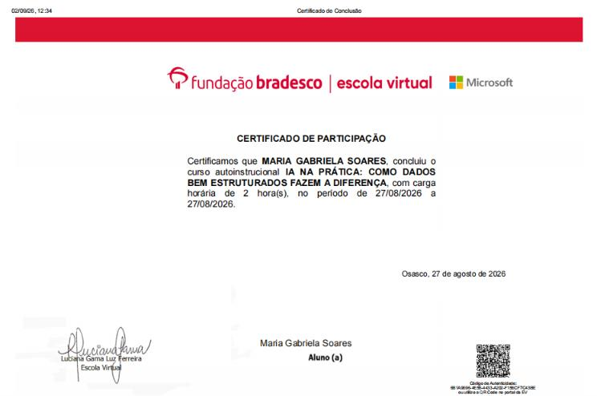

Profissional com experiência corporativa em rotinas de Departamento Pessoal (DP), suporte a sistemas ERP (TOTVS RM) e análise de dados. Atualmente focada em Engenharia e Análise de Dados, aplicando Python, SQL, Power BI e automação de processos para transformar dados operacionais em insights estratégicos para a tomada de decisão.
Dashboard interativo focado na análise de rotatividade e absenteísmo para otimização de rotinas de DP, identificando concentração de desligamentos e apoiando estratégias de retenção.
Ver Repositório no GitHub →